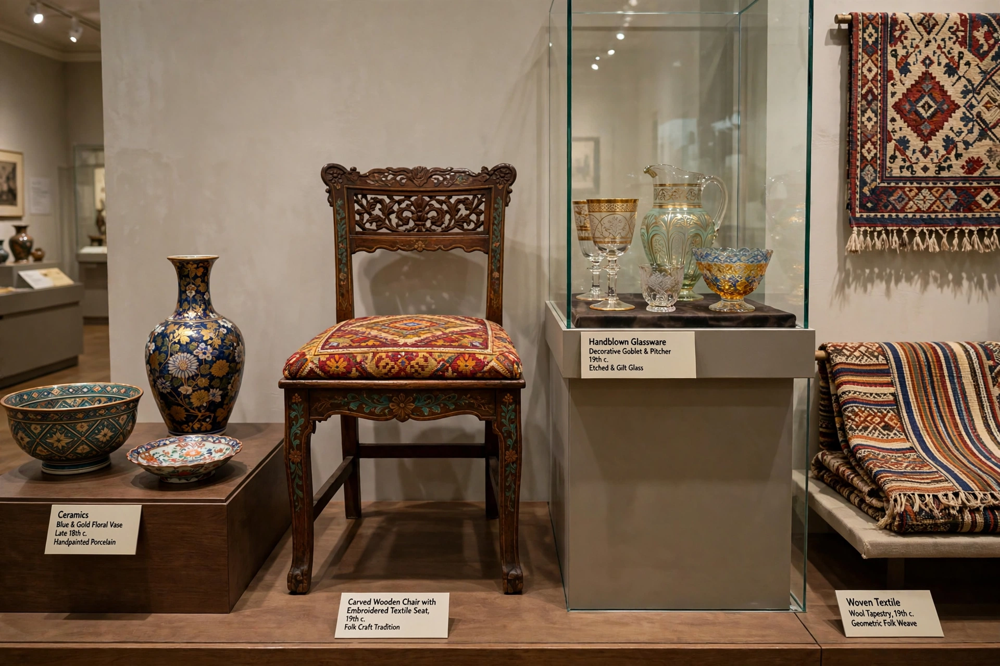

The applied arts are all the arts that integrate design and decoration into everyday and practical objects in order to make them aesthetically pleasing. The term is used in distinction to the fine arts, which are distinguished by their pursuit of beauty entirely for its own sake, without concern for practical function. In practice, the two often overlap.

Applied art includes industrial design, graphic design, fashion design, interior design, and decorative art (ceramics, metalwork, glassware, furniture, textiles, and jewellery). Architecture is also sometimes counted among the applied arts, as it uniquely combines utility with artistic expression at large scale. Movements and schools that sought to unite art with everyday life and production include the Arts and Crafts movement, Art Nouveau, the Deutscher Werkbund, and the Bauhaus.
The distinction between fine and applied art hardened in the 18th and 19th centuries as academies ranked painting and sculpture above craft. The Arts and Crafts movement, led by William Morris in reaction against industrial mass production, sought to restore dignity to handcrafted functional objects. In the 20th century, industrial design professionalized the discipline, and museums of applied art (such as the Victoria and Albert Museum in London, founded 1852) collected and celebrated design objects.